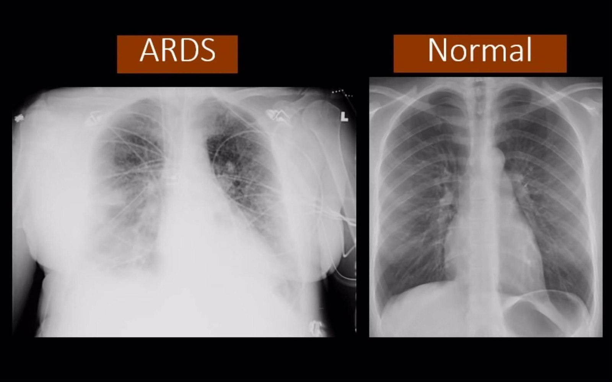
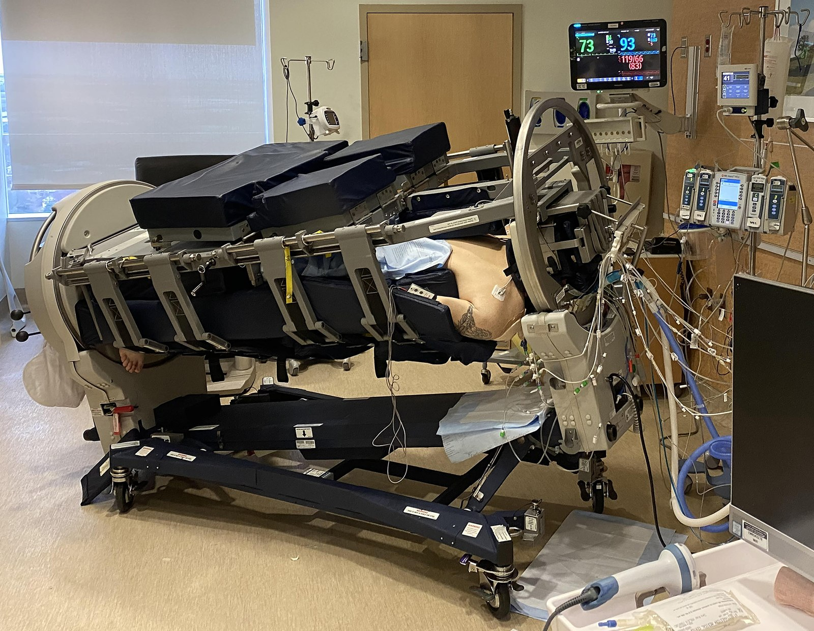
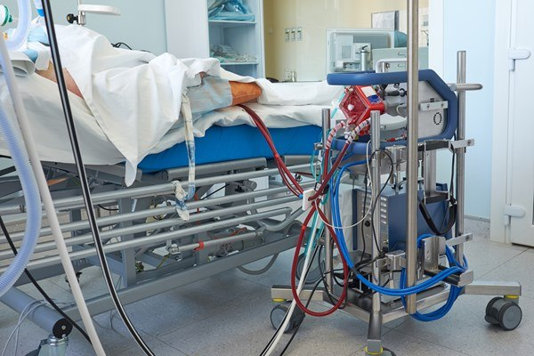
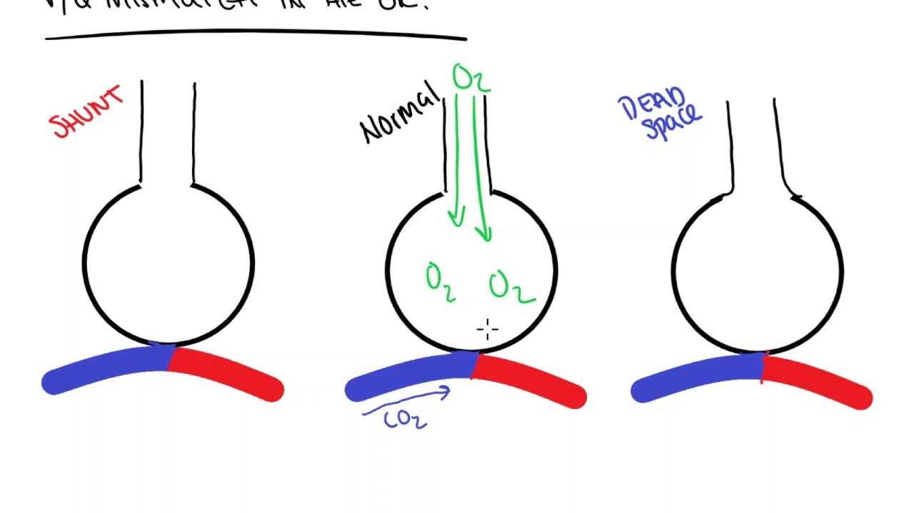
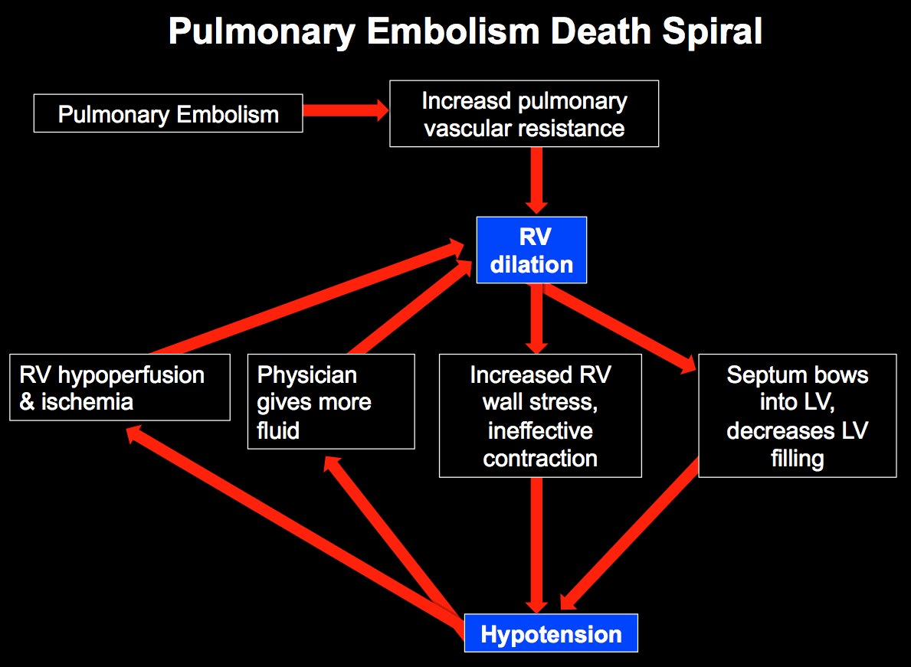

Day 1 · Topic 1
Respiratory and Progressive Issues in Critical Care
Things to Bring Forward
Earlier Content This Topic Builds On
- Oxygen delivery devices: when to use a nasal cannula or a non-rebreather, what CPAP does, why positive airway pressure is needed.
- Respiratory assessment: every aspect, not only breath sounds, O2 sat and respiratory rate. Know the treatments for each abnormal finding, such as the interventions for rhonchi.
- Respiratory diagnostics: chest x-ray, CT scan, thoracentesis. What each one tells you, when it is used, the nurse's responsibilities.
- Chest tubes: care, normal and abnormal findings, expected drainage.
- COPD (emphysema, chronic bronchitis), asthma, and pneumonia: the basics, and why this patient is in the ICU. A COPD patient is usually there for pneumonia or an exacerbation.
- ABG interpretation: simple interpretation of PaO2, PaCO2, bicarb and pH.
- Glasgow Coma Scale (GCS): the scale and its scores.
- Venous thromboembolism: who is at high risk for a PE, and preventing DVTs and PEs.
Advanced Respiratory Assessment
| Factor | What to Assess |
|---|---|
| Neurological status |
|
| Pain, procedures, conditions |
|
| Weakness and coughing |
|
| Medications |
|
Glasgow Coma Scale and Airway Protection
3
Minimum score.
Less Than 8
Usually indicates coma.
9 to 12
Airway protection becomes the concern.
15
Highest score.
Acute Respiratory Failure
Inability of the respiratory system to provide oxygen and/or remove carbon dioxide from the body. Most common admitting diagnosis in critical care units, as the primary problem (severe pneumonia) or the result of another condition (major surgery with blood loss, time on a ventilator, sepsis).
Oxygenation Failure: Hypoxemia
- PaO2 less than 60 (partial pressure of arterial oxygen), found on an ABG.
- PaO2 is the most accurate oxygen level. An O2 sat is affected by perfusion to the fingers, warmth and arterial disease.
- See below for causes.
Ventilatory Failure: Hypercapnia
- PaCO2 greater than 50 on an ABG. A venous CO2 is not as diagnostic as an arterial one.
- Can be related to chronic respiratory failure, but not mutually exclusive. A stressor such as a respiratory infection overwhelms a system already compromised by COPD.
- Also related to hypoventilation and/or V/Q mismatch.
- Hypercapnia significantly increases cerebral blood flow, so CNS changes occur: anxiety, restlessness, rising intracranial pressure. LOC changes come more quickly than in oxygenation failure.
- Hypoventilation leaves CO2 sitting in the alveoli: respiratory acidosis develops quickly. The kidneys cannot compensate the way the lungs can.
A patient is not usually labelled as one type. Look at the clinical picture and decide whether it is both, or primarily an oxygen problem.
Five Mechanisms of Oxygenation Failure
| Mechanism | What Happens |
|---|---|
| Hypoventilation |
|
| Intrapulmonary shunting |
|
| V/Q mismatch |
|
| Diffusion defects |
|
| Decreased barometric pressure |
|
Oxygenation also fails with low cardiac output (the heart is not pumping oxygenated blood where it needs to go) and low hemoglobin (too anemic to carry oxygen to the tissues).
How Respiratory Failure Is Recognized
Signs That Point to Respiratory Failure
- Increased work of breathing.
- Increasing O2 needs. Turned up from 2 L to 6 L with no improvement: not good.
- Chest x-ray.
- Labs: H&H and ABG (PaO2, PaCO2).
Interventions for Respiratory Failure
| Intervention | What to Do |
|---|---|
| Maintain a patent airway |
|
| Optimize O2 delivery |
|
| Minimize O2 demand |
|
| Treat the cause |
|
Acute Respiratory Distress Syndrome (ARDS)
Most severe version of acute respiratory failure, and a disease process of its own. Anyone in ARDS is in acute respiratory failure.
| Criterion | What It Means |
|---|---|
| Acute onset |
|
| Bilateral pulmonary opacities |
|
| Altered PaO2/FiO2 ratio |
|

Causes of ARDS
Direct Causes
- Aspiration of gastric contents
- Fat embolism
- Inhalation of toxic gases
- Multisystem trauma (chest and/or lung injury)
- Near-drowning
- Pneumonia
Indirect Causes
- Burns
- Cardiopulmonary bypass
- Drug overdose
- Fractures, especially of the pelvis or long bones (through fat embolism)
- Multiple transfusions
- Multisystem trauma (without chest and/or lung injury)
- Pancreatitis
- Sepsis
Pathophysiology of ARDS
From Lung Injury to Hypoxemia
- Acute and diffuse injury to the lungs.
- Inflammatory response: a cell-mediated, overly aggressive immune response damages the alveolar-capillary membrane.
- Massive platelet aggregation and intravascular thrombi. Sputum is often blood-tinged or pink.
- The membrane becomes very permeable. Fluid, protein and blood cells leak into the alveoli, and massive fluid leakage throughout the body causes edema.
- Alveolar flooding: noncardiogenic pulmonary edema (not heart failure), shunting, V/Q mismatch, decreased compliance, hypoxemia. The edema sitting in the lungs puts the patient at very high risk of pneumonia.
- Pulmonary hypertension causes further shunting. Dead space grows and surfactant is not produced.
Assessment Findings in ARDS
Acute Onset, Not Yet Intubated
- Dyspnea, tachypnea.
- Hypoxemia not responding to supplemental O2 (refractory hypoxemia). FiO2 goes up through high flow, CPAP and intubation, and PaO2 and SpO2 still do not rise.
- Fine crackles from fluid in the alveoli. Often no breath sounds at all.
- Restlessness, disorientation, decreasing LOC.
- Pulse and temperature may increase.
- PaO2 continues to decrease and dyspnea becomes severe. Central cyanosis when severe enough.
Intubated Patient
- Usually sedated, paralyzed and ventilated.
- Peak pressures increasing: how the ventilator shows decreased compliance.
- Increasing O2 needs, with no rise in SpO2 or PaO2.
ARDS Interventions
| Intervention | What It Does |
|---|---|
| Mechanical ventilation |
|
| ECMO |
|
| Corticosteroids |
|
| Prone positioning |
|
| Therapeutic hypothermia |
|


ARDS Consequences
Problems Common After ARDS
- PTSD, anxiety and depression: more than half of survivors, within two years of recovery.
- Weakness, mobility issues, breathing issues.
- Nausea, swelling, memory issues, fatigue.
Multidisciplinary Care
- PT/OT: mobility, to prevent weakness.
- RT and MD: ventilator management and sedation needs.
- Nutrition: usually a Dobhoff tube and high levels of supplemental nutrition.
- Psychosocial and mental health: early treatment and awareness, beginning in the ICU and continuing through discharge and beyond.
- Outpatient critical care follow-up for long-term needs.
Pulmonary Embolism
What Can Lodge in the Pulmonary Circulation
- Clot from a DVT: most common, from a lower extremity.
- Fat emboli.
- Septic vegetation, from a heart valve in sepsis.
- Catheter fragment, from a PICC or central line.
- Amniotic fluid emboli in pregnant women.
Most PEs and DVTs are never identified, because the lungs have an enormous capacity to compensate. One that does present is usually very dangerous.
Shunting, V/Q Mismatch and the Death Spiral
Shunting and V/Q Mismatch in a PE
- Airflow is there. The patient can take breaths in.
- Blood cannot get to the alveoli to perform gas exchange.
- Blood flow beyond the occlusion stops, so there is no gas exchange beyond it.
Pulmonary Embolism
Blood cannot flow freely through the pulmonary vasculature. Pulmonary pressures rise.
Increased Pulmonary Vascular Resistance
The lungs back up against the blockage.
RV Dilation
Increased RV wall stress and ineffective contraction. The septum bows into the LV and decreases LV filling.
Hypotension
RV hypoperfusion and ischemia, and more fluid given by the physician, dilate the RV further. Can end in right heart failure and death.


PE Identification and Assessment Findings
Assessment Findings
- Symptoms are usually vague and nondescript, with no hallmark sign.
- Classic: pleuritic chest pain, shortness of breath, hypoxia.
- Less common: tachypnea, crackles, accentuated S2 heart sound, tachycardia, fever.
- Suspect a PE in any patient with respiratory distress that cannot be easily explained.
- Pregnancy is a very high risk for PE.
Who is at high risk for a PE is taught in the Respiratory Diseases review
| Test | What It Shows |
|---|---|
| Chest x-ray |
|
| D-dimer |
|
| V/Q scan |
|
| Spiral CT scan |
|
| Pulmonary angiography |
|
PE Treatment
Less Severe
At home on blood thinners: enoxaparin, or Xa inhibitors such as apixaban long term. Follow-up, and risk factors addressed.
Severe
IV heparin and a bolus immediately, then transition to enoxaparin. Warfarin started immediately as well, for long-term prevention and management.
Massive
Surgical or catheter embolectomy. EKOS catheter: ultrasound with heparin, placed right in the pulmonary circulation. ECMO when very severe.
IVC Filter, Oxygenation and Prevention
- IVC filter: often placed. Sits in the inferior vena cava to catch clots that dislodge from the lower extremities.
- Optimize oxygenation acutely, as well as you can. Intubation may be needed but does not solve the problem, which is blood flow to the lungs.
- Prevention: heparin shots or enoxaparin, SCDs, mobilizing.
Preventing DVTs and PEs is taught in the Respiratory Diseases review
Other Respiratory Topics and Diagnostics
Hemodynamic Monitoring in Respiratory Problems
| Monitoring | What It Tells You |
|---|---|
| Capnography |
|
| Arterial line |
|
| PA pressure |
|
| SvO2 |
|
Medications Frequently Used in Respiratory Issues
| Medication | Use |
|---|---|
| Corticosteroids (inhaled, IV, PO) |
|
| IV diuretics |
|
| Antibiotics |
|
| Benzodiazepines, opioids, paralytics |
|
| Breathing treatments (nebulizer) |
|